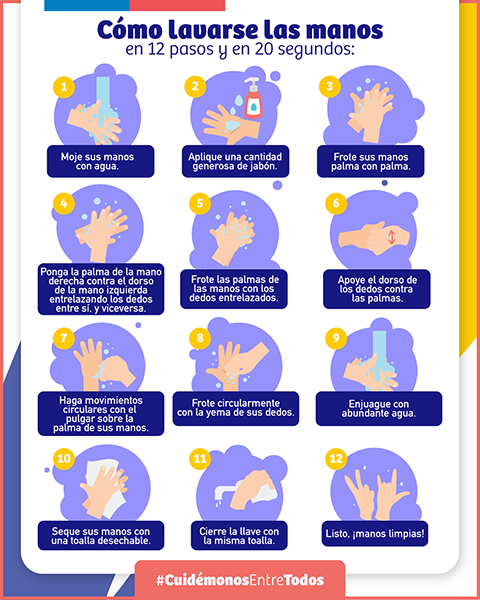
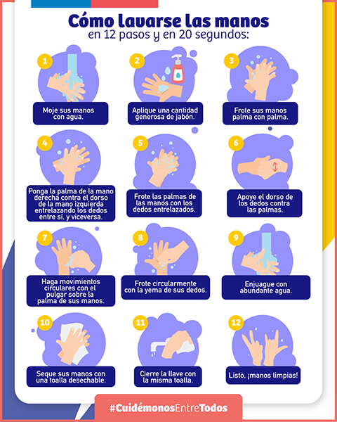

El gobierno decretó cuarentenas, aduanas y cordones sanitarios en zonas específicas del país para controlar la propagación del virus entre regiones.
DEFINICIONES
- Cuarentena de Aislamiento: Confinamiento que deben realizar personas confirmadas con COVID-19, a la espera del resultado del examen de PCR o que han tenido contacto estrecho con personas confirmadas con COVID-19. Este confinamiento debe realizarse en su domicilio, recinto hospitalario o residencias sanitarias, según criterio clínico.
- Cuarentena Territorial:
- Sector o Localidad en Paso Cuarentena (Fase 1): Zonas en que se prohí be la libre circulación de personas con el fin de evitar la transmisión comunitaria y expansión del virus, todos los días de la semana.
- Sector o Localidad en Paso Transición (Fase 2): Zonas en que se prohíbe la libre circulación de personas con el fin de evitar la transmisión comunitaria y expansión del virus, sólo los días sábado, domingo y festivos.
- Cuarentena Preventiva: Es el confinamiento que deben realizar mayores de 75 años durante el periodo que determine la autoridad, por ser considerados un grupo de alto riesgo y personas que ingresen a Chile por el plazo de 14 días.
- Aduana Sanitaria: Barrera de control sanitario que se establece en un punto específico para controlar el acceso entre una zona y otra. Para conocer la ubicación de estos puntos de control, haz click aquí.
- Cordón Sanitario: Medida que prohíbe el ingreso y salida de un lugar determinado. Para el ingreso y salida se requerirá de salvoconducto individual, permiso de desplazamiento colectivo o permiso único colectivo, para asegurar el abastecimiento básico y los servicios esenciales en dicho lugar.
- Toque de Queda: Es la suspensión de la libertad de circulación en los horarios determinados por los Jefes de Defensa Nacional en un Estado de Excepción Constitucional de Catástrofe.
Los permisos para desplazarse en zonas con restricciones sanitarias, está especificados en el “Instructivo para Permisos de Desplazamiento”.